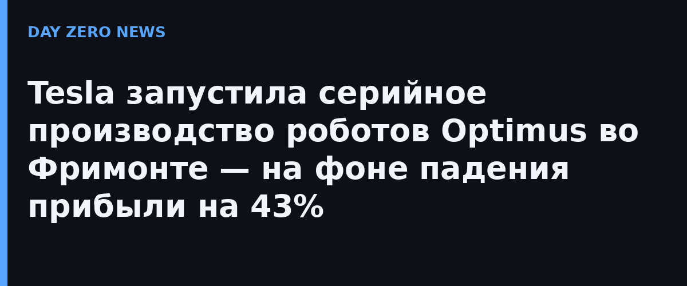

На звонке по итогам третьего квартала Tesla подтвердила: производство Optimus началось во Фримонте на высокосерийных линиях — в цехах, которые раньше выпускали электромобили. Компания заявляет, что текущий производственный процесс «пригоден для коммерческого продукта», итерация железа и доработка процесса железа продолжатся параллельно. Это первый случай, когда гуманоидный робот такого уровня попадает на полноценный конвейер автозавода.
Выручка Tesla составила $28,05 млрд против $28,09 млрд годом ранее — практически на месте, причём automotive-выручка застыла на $20 млрд. Чистая прибыль по GAAP — $787 млн против $1,37 млрд в третьем квартале 2025-го, падение на 43%. Причина — расходы на ИИ-проекты и Optimus. Светлое пятно: сервисное подразделение (включая подписки на FSD) выросло на 33% год к году до $4,6 млрд с рекордной валовой прибылью $734 млн.
Заодно Tesla подтянула роботаксиевские новости: Cybercab вышли на линии в Остине ещё 3 сентября, накопленный пробег в полностью автономном режиме достиг почти двух миллионов миль, а за квартал он вырос восьмикратно. Вице-президент по автономному вождению Ашок Эллусвами сказал, что владельцы смогут подключать свои машины к сети роботакси ориентировочно во втором квартале 2027-го — софт для Cybercab и Model Y уже общий, останется вписать клиентские машины в геозоны и управление парком. The Verge напоминает: дедлайны по автономии Маск исторически любит назначать смелые и переносить годами.
Робототехническое направление у нас тоже живёт: в сентябре «Сбер» показал собственную модель манипуляций GreenWAM для роботов, а в Москве продолжается эксперимент с автономным такси. Масштабы, правда, другие: Tesla закладывает под роботов целый бывший автомобильный завод.